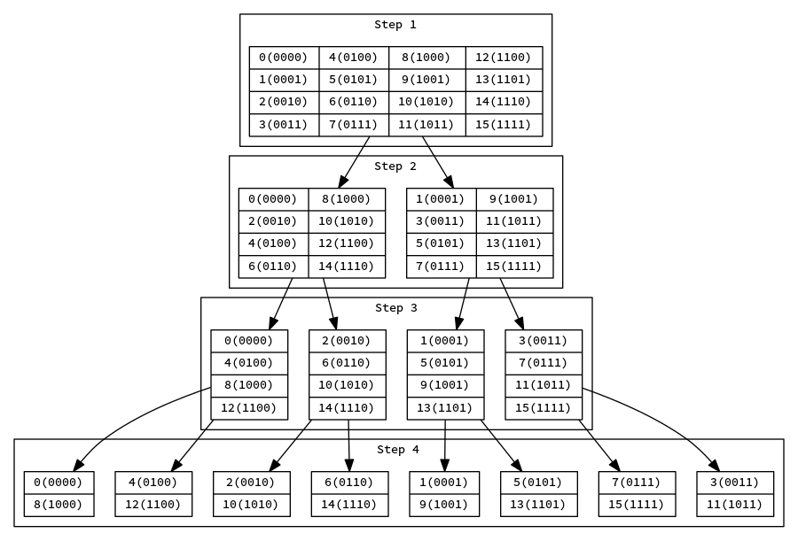
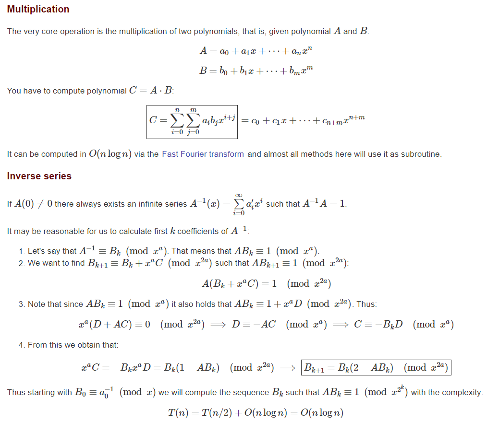
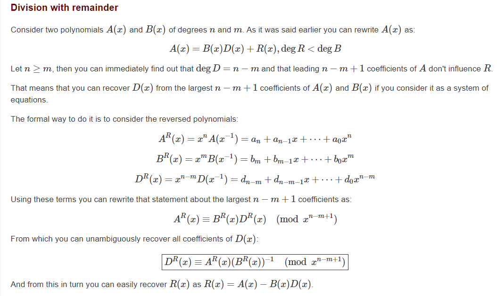

基于快速数论变换的多项式
最后更新于：2022年6月25日 下午
快速 Fourier 变换（FFT），被称为 20 世纪最伟大的十大算法之一。所以很多软件都有对应的 FFT，例如 Python 的 scipy.fftpack 中就有关于 FFT 的包。所以个人写 FFT 就没有那么必要了。但是 NTT（快速数论变换） 的包一般都没多少，而且会写 NTT 必然就会写 FFT 了。大约在 5 年前，在 miskcoo 博文：从多项式乘法到快速傅里叶变换 学会并且写过 NTT 的 C++ 代码，可惜这篇文章被作者删掉了。
NTT 一个很大的限制就是你只能在 NTT-friendly 的域（例如 $\mod 998244353 = 119 \cdot2^{23}$，原根为 $3$ ）
对于一般的素数 $p$，我们可以选择 $n$ 个 NTT-friendly 的大基底 $p_1,\cdots, p_n$ 使得 $p_1\cdots p_n$ 大于 ans 的上界，然后再用 中国剩余定理 就可以把 ans 搞出来了。
基底的选择
我们考虑 $\mod p$ 构成的域。即运算默认是 $\mod p$ 的（除了指数上的幂次数），因为原根定理，此形式必有原根 $g$，即存在 $\mod p$ 中所有元素都可以写成 $g^n$ 的形式（所以 $g^{p-1}=1,g^{n}\neq 1, 0<n<p-1$）。而我们做 NTT 是需要找一个元素 $w$，使得 $w^{2^k} = 1$，因此我们需要找素数 $p$，使得 $p-1=c \cdot 2^k$，其中 $c$ 是个小奇数。
查找基底的 SageMath 代码
1 | |
我们会发现有很多可供选择的例子，其中的娇楚（$c$ 较小，$k$ 较大，$p^2 < 2^{63}$）
x_1 = 1 + 2^27 * 15十分推荐！$x_2$ 刚好不超过INT_MAX，所以在乘积取模之前还多一次加法运算，就很方便！x_2 = 1 + 2^27 * 17是平方不超过LL(long long)中最大的一个，但是不推荐，因为 $2*x_1^2$ 超了LL。x_3 = 1 + 2^21 * 479是网上常见的一个，但并不推荐。$c$ 太大了！x_4 = 1 + 2^12 * 3是最小不超过INT16，并且 $c$ 特别小的一个！如果不用LL就很推荐x_5 = 1 + 2^57 * 29是不超过INT64中最推荐的一个！然后基础运算需要用 GCC 内建的__int128
总之，$x_1$ 是最为推荐的，$x_2,x_3$ 很常见主要是因为国内第一篇比较完整的介绍 NTT 的是 大佬 miskcoo，他当时给的常数是 $x_2,x_3$，然后就人云亦云了 $x_5$ 很有意思，它敲好比 $2^{62}$ 小一点，然后它又大于 $1e9+9$，而 $1e9+7,1e9+9$ 这两个孪生素数又经常的出现在 ICPC/IO 中！但是，貌似也没啥用，见 NTT 模板代码的注释
用 SageMath 自带的 primtive_root 函数分别求对应的原根 $g_1=31,g_2=g_3=g_5=3,g_4=11$。
所以，在 LL 的数据范围内，我们可以使用 $x_1$，可以处理最长长度为 $2^{27}$ 的 NTT，最长为 $2^{26} \sim 6 \times 10^7$ 项的 NTT 多项式乘法。
我们现在存在 $w$，有 $w^N = 1,\; w^n \neq 1, 0< n < N$，其中 $N = 2^k, k<27$，有时我们用 $w_N$ 表明 $w$ 和 $N$ 的关系。
离散 Fourier 变换 DFT
对长度为 $N$ 的数列 $a_0, \cdots a_{N-1}$ 做离散 Fourier 变换得到数列 $\hat{a}_0 \cdots \hat{a}_{N-1}$
写成矩阵形式
即上述矩阵为 $A$，则 $a_{ij} = w^{ij}$, 即 $b_{ij}= w^{-ij}$，则 $AB = NI$，即 $A^{-1} = \frac{1}{N}(w^{-ij})_{N \times N}$。即我们得到了 Fourier 逆变换公式：
快速 Fourier 数论变换 NTT
记 $H = \frac{N}{2}$，
即长度为 $N$ 的 Fourier 变换可以其奇数项和偶数项的长度为 $\frac{N}{2}$ 的 Fourier 变换表出。于是递归的我们可以在 $O(n\log n)$ 时间复杂度求出。
递归太消耗计算时间了。因此我们需要给出非递归的版本
快速 NTT 图

从这个图发现，最终的计算顺序，是每个数的位倒序。处理的细节 miskcoo 博客写的特别清楚了！
当我想要修改 Miskcoo 的代码形式时，发现怎么修改都没他的好！后来有了 Jiangly 的模板（2020-03-01）打败了他
还有 NTT 可以用于求多项式的逆！也可见 Miskcoo 的博文
NTT 和卷积的关系
实际上我们通常的卷积 $c_{k} = \sum_{i + j = k} a_i b_j$ 会被我们拓展长度为 N（一般为 2 的幂次），且超过 a 和 b 的长度和。这样一来，我们可以把这个卷积改写成：
这样改写的好处，一来有些卷积原来就是这个形式的，二来为下面的证明做铺垫。
设 $a,b$ 是长度为 $N$（一般为 2 的幂次，但这个限制只是为了快速计算）的数列，则
Proof：
最后一个式子成立是因为若 $i \neq j$，则 $\sum_{k_1 + k_2 \equiv k \mod N} w^{k_1 i} a_i w^{k_2 j}b_j=0$
所以我们有 $a \star b= \hat{\hat{a} \hat{b}}$，而多项式乘法只是卷积的一个例子。有些时候 计算式 一开始不是卷积形式，但是可以转换成卷积形式，再利用 FFT 或者 NTT 加速。
常见形式卷积
这种形式的卷积，你可以认为是需要你补充 $h(-d), \cdots, h(-1)$ 这 $d$ 个数后进行卷积，就是相当于平移一下。比如说我们想求 $f(m), \cdots f(m + n)$（其中 $m \geq d$），那么我们考虑多项式 $A = \sum_{i = 0}^d g(i) x^i$, $B = \sum_{i = 0}^{n + d} h(m - d + i) x^i$，那么 $f(m + j) = (AB)[d + j]$
NTT 模板
1 | |
NTT 模板更新（2020/7/9)
1 | |
关于多项式乘法，求逆，带余除法的理论基础见下图，取自 cp-algorithm


与之对应的还有快速 Mobius 变换
—————————————— 分割线 ——————————————
多项式（多项式全家桶 已全部 AC）
- 仅包含乘法的四大多项式底层基类分别为：PolyBaseNTT, PolyBaseMFT3(弃用，被后面两个淘汰了), PolyBaseMFT4, PolyBaseFFT
- PolyBaseNTT：基于固定的 NTT-friendly（原根一般为 3）模数快速数论变化（看具体题目，一般为 998244353）
- PolyBaseMFT3：基于三个固定的 NTT-friendly 且原根为 3 的三模数（469762049, 998244353, 1004535809），利用 crt 求解任意模数多项式乘法（已被淘汰，请勿使用）
- PolyBaseMFT4：基于四个固定的 NTT-friendly 且原根为 3 的四模数（595591169, 645922817, 897581057, 998244353），利用 crt 求解任意模数多项式乘法
- PolyBaseFFT：基于 FFT 求解任意模数多项式乘法（需要注意精度）
- 通过模板继承拓展得到全面的多项式类 Poly (加减乘除余，转置乘法，求导，积分，指数，对数，求逆，开方，一点求值，多点求值，快速幂模，内积，一个首一多项式的次方模 $x^n$ 先取对数乘以次数再取指数得到，三角函数，反三角函数)，这个过程学到了很多东西
- 多项式静态函数：$O(n \log^2 n)$ 计算 $\sum_{i = 1}^n \frac{a_i}{1 - b_i}$
- 多项式静态函数：$O(k \log k \log n)$ 求 $k$ 阶常系数递推公式的第 $n$ 项
- 多项式静态函数：模自然数方幂和 $O(k \log k)$ 得到前 $k$ 个答案
- 多项式静态函数：Lagrange 插值：先分治求 $g(x) = \prod(x - x_i)$，再求 $g’(x)$ 在 $x$ 处的多点求值，再分治即可。
- 求阶乘 $n! \mod p$：基于多点求值 $O(\sqrt{n} \log^2 n)$ 求 $\sqrt{n}$ 个点之后暴力
- 求阶乘 $n! \mod p$：min_25 用点求点 $O(\sqrt{n} \log n)$ 求 $\sqrt{n}$ 个点之后暴力
无运算的多项式底层基类：PolyBase（standard 在取余时，特别重要不可省略）
使用准则
- 多项式项数 $N < 4 \cdot 10^6$
- $M$ 要是超了 int，那就只能用 ModLL 版本 4 模数 Poly
- 否则，要是 $M$ 不固定就用使用 ModInt 的 FFT 版 Poly
- 否则，当 $M$ 为固定的 NTT-friendly 素数时，使用 NTT 版 Poly
- 否则，使用 MInt 的 FFT 版 Poly
极简版多项式模板（polyS）
由于多项式模板一直扩展，动则 1000+ 行，实在有点搞，所以就搞了一个极简版的。
4 次 FFT 原理
我们本来要求 $A \dot B$，然后我们把它拆成 $A = A_1 + 2^{d} A_2, B = B_1 + 2^d B_2$，那么
于是我们只需计算 $(A_1 + i A_2)(B_1 + i B_2)$ 和 $(A_1 + i A_2)(B_1 - i B_2)$ 即可，但是注意到 $dft((B_1 + i B_2))[j] = \overline{dft((B_1 + i B_2))[n - j]}$ 所以本来需要 5 次 FFT，现在只需要 4 次即可。
其实本质上，我们可以只做 3.5 次 FFT，因为 2 次 dft 我们可以得到 $A_1, A_2, B_1, B_2$ 的 dft 值，然后我们最后只需 3 次实数版 idft 即可（算作 1.5 次）！所以总的来说是 3.5 次。但是实现的时候也没办法搞 0.5 次，可惜。
min_25 用点求点原理（其实可以用下降幂更简洁的处理）
学习资料：zzqsblog, bztMinamoto
我们令 $s = \sqrt{n}$ 然后 $\displaystyle g_{s}(x) = \sum_{i = 1}^{s}(x + i)$，我们想要得到 $g_s(0), g_s(s), \cdots g_s((s - 1)s)$ 的值。然后 $n! = \prod_{i = 0}^{s - 1} g_s(i s) \cdot \prod_{i = s^2 + 1}^n i$
现在假设我们已经得到了
一个 $d$ 次多项式由它在 $d + 1$ 个不同点的取值唯一决定（多于 d + 1 个点也可以）
我们如何求
注意到 $g_{d + 1}(x) = g_{d}(x) \cdot (x + d + 1)$ 即可 $O(d)$ 计算出 前 $d + 1$ 个，最后一个直接暴力计算即可。
我们如何求
同样我们注意到 $g_{2d}(x) = g_{d}(x) \cdot g_d(x + d)$ 如果我们设 $h(i) = g_d(i s)$，（那么很关键的一点 $g_d(is + d) = g((d / s + i) s = h(d / s + i)$，卧槽， $d / s$ 在模 p 意义下得到就可以了，而且肯定大于 d，否则矛盾！）那么问题就转化成如何根据一个 $d$ 次多项式的值：$h(0), h(1), \cdots, h(d)$ 求
以及
我们不妨对于任意的给定的 $k > d$，先求出
注意到根据 Lagrange 插值多项式
注意到这里的卷积跟我们普通的卷积不一致，左边长度为 $d + 1$ 的多项式乘以右边长度为 $2d + 1$ 的多项式，然后次数为 $d, \cdots 2d$ 这 $d + 1$ 位是有效的。
- 不能写成除以阶乘的形式，因为 x 有可能很大。
- 为了保证 $d/s < 2 d$，我们需要使用 Wilson 定理即 $(p - 1)! = -1$
分治 FFT
已知 $f_i = \sum_{j=1}^i f_{i-j} g_j$ 和 $f_0$ 求 $f$
这个显然可以分治来做，其实用生成函数推理可知 $f = \frac{f_0}{1 - g}$
下降幂与点值
设 n 次多项式 $f(x) = \sum_{i = 0}^n b_i x^{\underline{i}}$，则
因此 $EGF(f) = b e^x$，反过来也一样 $b = EGF(f) e^{-x}$（注意这里可以简单的多点求值，可以求更多的点）
下降幂与连续点值有 $O(n \log n)$ 的转化。而普通多项式跟连续点值却没有，可以认为普通多项式要的连续其实是类似 FFT 那样的连续。但是注意到以连续点求连续点有 $O(n \log n)$ 的做法
Binom
这里的单例很秀的一点就是用了 const 引用，但是却不妨碍我修改它的值！这样的好处：
- 对于
MInt<M>直接初始化了，不用在 setMod - 对于
ModInt, ModLL这些本来就要 setMod，那就给它调用 setMod 重新刷新 Binom 的值
源代码在换 mod 的时候会有 bug，于 2021-7-24 重构 Poly，通过继承 vector 方式而非 vector 变量的方式的时候发现了这个 bug 并修复了
注意事项：如果利用了 vector 这种结构，然后再用引用可能会因扩容而导致 RE，可以通过预先申请较大的内存的做法，此后不要随便用 .back() 这类不确定的调用
Lagrange 反演
若 $f(x), g(x) \in F[[x]]$ 且 $f(g(x) = x$，则
特别地，若 $f(x) = \frac{x}{\phi(x)}$，则